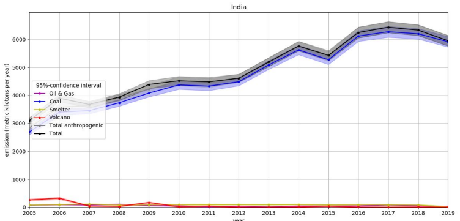
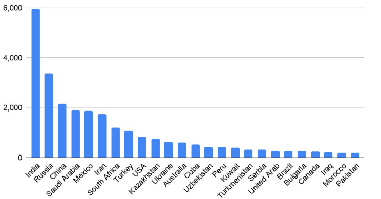

Acid Rain
Acid rain, also known as acid deposition, is a type of precipitation that has a high level of acids, mainly sulfuric acid (H2SO4) and nitric acid (HNO3). The term "acid rain" was first used by Robert Angus Smith in 1852 while chemically investigating rainwater in the industrial areas of England and Scotland.
It forms when gases like sulfur dioxide (SO2) and nitrogen oxides (NOx) are released into the atmosphere. These gases mix with water vapor, oxygen, and other chemicals in the air to form acidic compounds, which then fall back to Earth as precipitation.
Rainwater is naturally slightly acidic (pH ~5.6) because carbon dioxide dissolves in water to form weak carbonic acid. Natural sources such as volcanic gases and wildfires also contribute. Acid rain, however, has a pH of less than 5.0, often in the range of 4.0–4.5.
The main cause of acid rain is the burning of fossil fuels. Power plants, factories, vehicles, oil refineries, metal smelting, and chemical industries release large amounts of SO2 and NOx, which mix with rainwater to form acid rain.
Effects of Acid Rain
Effect on Soil: Acid rain depletes nutrients like calcium and magnesium, making soil less fertile for plant growth.
Effect on Plants & Forests: It damages leaves and bark, weakening trees and making them more vulnerable to disease and weather.
Effect on Water & Aquatic Life: Lakes and rivers become acidic, harming fish, frogs, and other aquatic animals. Fish gills are particularly affected.
Effect on Buildings & Monuments: Acid rain corrodes stone, metal, and paint, damaging heritage structures, especially marble monuments.
Clean Energy as a Solution
The major cause of acid rain is the combustion of fossil fuels to meet energy needs. Transitioning to clean energy sources can significantly reduce emissions of sulfur dioxide (SO2) and nitrogen oxides (NOx), which are the primary contributors to acid rain.
How Clean Energy Helps
Reduces key pollutants: Burning fossil fuels releases sulfur dioxide and nitrogen oxides. Clean energy sources, such as solar, wind, and hydropower, generate electricity without releasing these pollutants, thereby directly preventing them from entering the atmosphere.
Lowers fossil fuel reliance: Switching to clean energy decreases the overall consumption of fossil fuels, which are the primary source of the emissions that cause acid rain.
Aids in cleaner transportation: The adoption of clean energy extends to transportation, where electric vehicles powered by clean energy reduce emissions from cars and trucks, another major source of acid rain pollutants.
Acid Rain in India
India is the world’s largest emitter of sulfur dioxide (SO2), producing over 21% of global human-made emissions mainly due to its heavy dependence on coal-based power plants. Although emissions fell by about 6% in 2019, levels remain very high because most thermal power stations still lack flue-gas desulfurization (FGD) systems to control pollution. Major hotspots include Singrauli, Korba, Mundra, Neyveli, and Talcher. Despite government regulations introduced in 2015 and deadlines extended to 2022, many plants have failed to install the required technology. To reduce pollution, the Indian government has started closing old power stations and allocated ₹4,400 crores to tackle air pollution. At the same time, India is expanding its renewable energy capacity and has set ambitious green energy goals to support a cleaner future.

Top 25 Emitter Countries of Anthropogenic SO₂ (2019)

(kilotonnes per year)
Energy Produced from Non-Fossil Sources
Detailed breakdown of renewable energy capacity
-
Solar power: 92.12 GW
-
Wind power: 47.72 GW
-
Large hydro: 46.93 GW
-
Bio-power: 11.32 GW
-
Small hydro: 5.07 GW
Progress in Clean Energy
Accelerated capacity growth: In August 2025, India reached 234.24 GW in renewable energy capacity, a substantial increase from just 76.37 GW in March 2014.
Pollution reduction: Studies show that a transition away from fossil fuels can lead to a significant drop in pollutants like sulfur dioxide (SO₂) and nitrogen oxides (NOx). This can result in improved air quality and reduced acidity in rainwater. For example, a fossil fuel-free scenario could cut air pollution exposure by 50%.
Conclusion
By decreasing its dependency on fossil fuels and increasing its use of clean energy, India is steadily addressing acid rain. As of May 2024, the nation's non-fossil fuel capacity has increased to 45.4% of total installed power generation, up from 32% in 2014, thanks to its strong focus on renewable energy sources like solar, wind, hydro, and biopower. India is progressively moving away from coal-based energy, which is the primary source of sulphur dioxide emissions that cause acid rain, with a total of 235.7 GW produced from non-fossil sources. In addition to lowering air pollution and acid deposition, India is fostering sustainable development and environmental preservation for the future by making significant investments in solar and wind energy and establishing aggressive renewable energy goals.
Acid Rain in World
Acid rain is a global environmental issue mainly caused by the emission of sulfur dioxide (SO₂) and nitrogen oxides from burning fossil fuels. Russia is the second-largest emitter of SO₂, accounting for about 12% of global emissions, mostly from smelters, oil, and gas industries. China, once the top emitter, has made major progress by installing flue-gas desulfurization systems and , cutting its SO₂ emissions by 87% since 2011. Saudi Arabia ranks fourth, with most emissions coming from oil refineries and power stations located in areas such as Makkah and Jeddah. In Europe, Ukraine, Serbia, and Bulgaria are among the largest SO₂ polluters due to their reliance on coal power, though the European Union has introduced strict limits to reduce these emissions. Australia also contributes significantly to SO₂ pollution through coal-fired power plants and mining operations, but still lacks strong regulations and control systems. Overall, while some countries like China and EU members have taken strong action to reduce air pollution, others continue to face challenges due to industrial and fossil fuel dependence. Transitioning to renewable energy and enforcing pollution control measures are vital steps to prevent acid rain and protect the planet’s ecosystems.